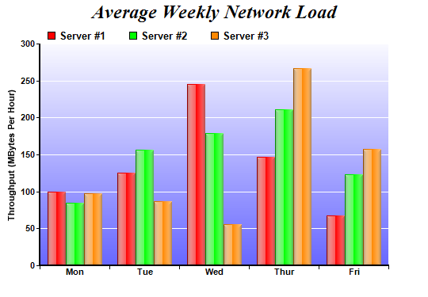

This example demonstrates a multi-bar chart with glass shading effect for bars and gradient color for plot area background.
Glass lighting is a complex shading effect that gives a look and feel of tinted glass or semi-transparent plastic material. This effect involves glare and variation of lighting caused by reflection and refraction inside the material.
The following is the command line version of the code in "cppdemo/glassmultibar". The MFC version of the code is in "mfcdemo/mfcdemo". The Qt Widgets version of the code is in "qtdemo/qtdemo". The QML/Qt Quick version of the code is in "qmldemo/qmldemo".
#include "chartdir.h"
int main(int argc, char *argv[])
{
// The data for the bar chart
double data0[] = {100, 125, 245, 147, 67};
const int data0_size = (int)(sizeof(data0)/sizeof(*data0));
double data1[] = {85, 156, 179, 211, 123};
const int data1_size = (int)(sizeof(data1)/sizeof(*data1));
double data2[] = {97, 87, 56, 267, 157};
const int data2_size = (int)(sizeof(data2)/sizeof(*data2));
const char* labels[] = {"Mon", "Tue", "Wed", "Thur", "Fri"};
const int labels_size = (int)(sizeof(labels)/sizeof(*labels));
// Create a XYChart object of size 540 x 375 pixels
XYChart* c = new XYChart(540, 375);
// Add a title to the chart using 18pt Times Bold Italic font
c->addTitle("Average Weekly Network Load", "Times New Roman Bold Italic", 18);
// Set the plotarea at (50, 55) and of 440 x 280 pixels in size. Use a vertical gradient color
// from light blue (f9f9ff) to blue (6666ff) as background. Set border and grid lines to white
// (ffffff).
c->setPlotArea(50, 55, 440, 280, c->linearGradientColor(0, 55, 0, 335, 0xf9f9ff, 0x6666ff), -1,
0xffffff, 0xffffff);
// Add a legend box at (50, 28) using horizontal layout. Use 10pt Arial Bold as font, with
// transparent background.
c->addLegend(50, 28, false, "Arial Bold", 10)->setBackground(Chart::Transparent);
// Set the x axis labels
c->xAxis()->setLabels(StringArray(labels, labels_size));
// Draw the ticks between label positions (instead of at label positions)
c->xAxis()->setTickOffset(0.5);
// Set axis label style to 8pt Arial Bold
c->xAxis()->setLabelStyle("Arial Bold", 8);
c->yAxis()->setLabelStyle("Arial Bold", 8);
// Set axis line width to 2 pixels
c->xAxis()->setWidth(2);
c->yAxis()->setWidth(2);
// Add axis title
c->yAxis()->setTitle("Throughput (MBytes Per Hour)");
// Add a multi-bar layer with 3 data sets
BarLayer* layer = c->addBarLayer(Chart::Side);
layer->addDataSet(DoubleArray(data0, data0_size), 0xff0000, "Server #1");
layer->addDataSet(DoubleArray(data1, data1_size), 0x00ff00, "Server #2");
layer->addDataSet(DoubleArray(data2, data2_size), 0xff8800, "Server #3");
// Set bar border to transparent. Use glass lighting effect with light direction from left.
layer->setBorderColor(Chart::Transparent, Chart::glassEffect(Chart::NormalGlare, Chart::Left));
// Configure the bars within a group to touch each others (no gap)
layer->setBarGap(0.2, Chart::TouchBar);
// Output the chart
c->makeChart("glassmultibar.png");
//free up resources
delete c;
return 0;
}
© 2023 Advanced Software Engineering Limited. All rights reserved.